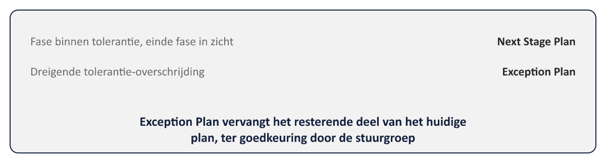

01
De motor van het project
⏱ 3 minDeel 7 behandelde het kader: hoe een project start (SU), hoe het wordt gefundeerd (IP), en hoe de stuurgroep stuurt (DP). Dit deel behandelt de vier processen die samen de motor van het project vormen — het draaiende geheel waarin, fase na fase, daadwerkelijk producten worden gemaakt: Controlling a Stage, Managing Product Delivery, Managing a Stage Boundary en Closing a Project.

Controlevraag
Uit Werkboek deel 8, Opdracht 8.1 — Welk proces, welke activiteit? (individueel, 15 min)
1Een teammanager beoordeelt of de gevraagde levertijd en resources haalbaar zijn voordat het werk begint. b. De projectmanager stelt een Exception Report op omdat een tolerantie dreigt te worden overschreden. c. De projectmanager werkt de business case bij tegen het einde van de fase. d. Een teammanager meldt formeel dat een werkpakket compleet is. e. De projectmanager stelt het End Project Report op. f. De projectmanager legt vast welke batenreviews na afsluiting nog moeten plaatsvinden. g. Een werkpakket wordt geautoriseerd voordat het team ermee mag beginnen. h. De projectmanager plant de volgende fase, inclusief herziening van kwaliteitsverwachtingen in de PID.Toon antwoord
MP (accept work package)